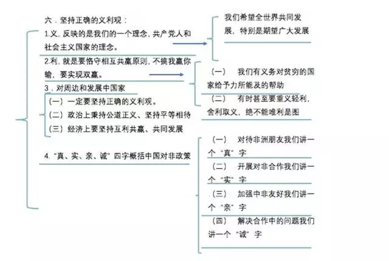
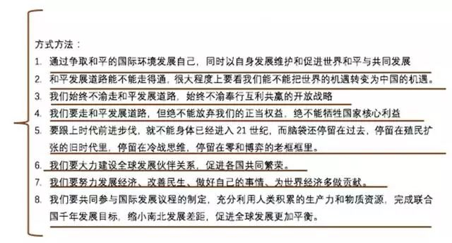
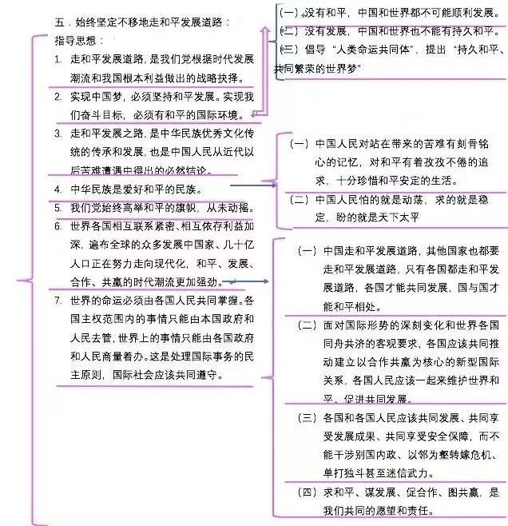
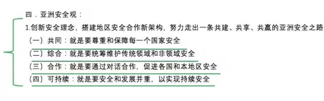
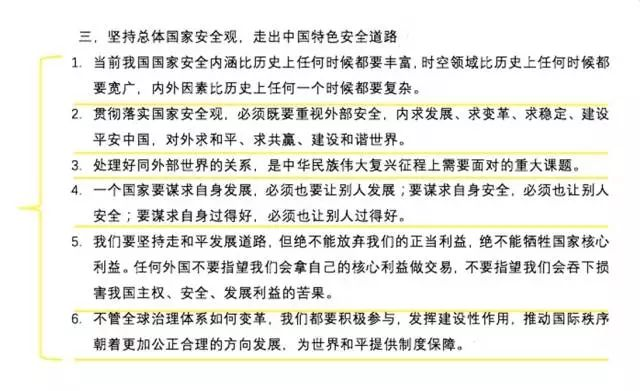
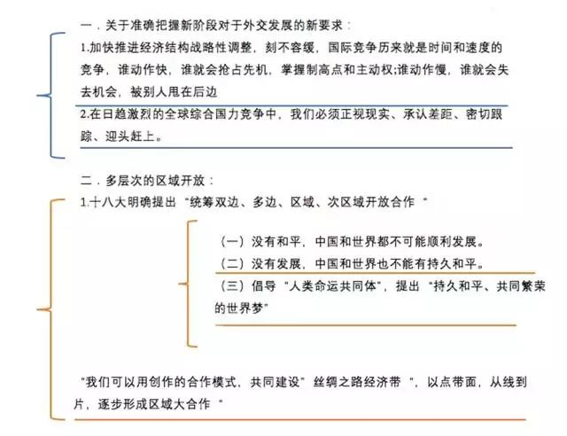

收录于合集

★
十九大帷幕落下，涌现一批新思想、新目标、新方法、新举措，十九大报告中出现许多国关外交相关论断。
★
一、国关外交成就
十九大是在世界经济复苏乏力、局部冲突和动荡频发、全球性问题加剧的国际格局下召开。尽管如此，十八大以来，砥砺奋进的五年中，我国的国际关系外交取得了突出成就，十九大总结了相关成果。
我国全方位外交布局深入展开。全面推进中国特色大国外交，形成全方位、多层次、立体化的外交布局，为我国发展营造了良好外部条件。实施共建“一带一路”倡议，发起创办亚洲基础设施投资银行，设立丝路基金，举办首届“一带一路”国际合作高峰论坛、亚太经合组织领导人非正式会议、二十国集团领导人杭州峰会、金砖国家领导人厦门会晤、亚信峰会。倡导构建人类命运共同体，促进全球治理体系变革。我国国际影响力、感召力、塑造力进一步提高，为世界和平与发展作出新的重大贡献。拓展了发展中国家走向现代化的途径，给世界上那些既希望加快发展又希望保持自身独立性的国家和民族提供了全新选择，为解决人类问题贡献了中国智慧和中国方案。
二、国关外交原则
报告中提到，在新的国际格局交往中，我们需要坚持两个原则。
第一，坚持总体国家安全观。
统筹发展和安全，增强忧患意识，做到居安思危，是我们党治国理政的一个重大原则。必须坚持国家利益至上，以人民安全为宗旨，以政治安全为根本，统筹外部安全和内部安全、国土安全和国民安全、传统安全和非传统安全、自身安全和共同安全，完善国家安全制度体系，加强国家安全能力建设，坚决维护国家主权、安全、发展利益。
第二，坚持推动构建人类命运共同体。
中国人民的梦想同各国人民的梦想息息相通，实现中国梦离不开和平的国际环境和稳定的国际秩序。必须统筹国内国际两个大局，始终不渝走和平发展道路、奉行互利共赢的开放战略，坚持正确义利观，树立共同、综合、合作、可持续的新安全观，谋求开放创新、包容互惠的发展前景，促进和而不同、兼收并蓄的文明交流，构筑尊崇自然、绿色发展的生态体系，始终做世界和平的建设者、全球发展的贡献者、国际秩序的维护者。
三、 国关外交目标
旗帜鲜明地提出，中国特色大国外交的总目标是推动构建新型国际关系，推动构建人类命运共同体。
（一）目标内涵
1.明确了新型国际关系的内涵
习近平同志倡导建立的新型国际关系与传统国际关系不同。十九大报告对新型国际关系的内涵做了明确的阐述，包含三个关键词。
第一个关键词是相互尊重。强调的是，要摈弃传统的以强凌弱的丛林法则，坚持国家不分大小、贫富、强弱，要一律平等，各国主权范围内的事情只能由本国政府和人民去管，要尊重各国根据各自国情选择发展道路，坚决反对外部势力干涉国家内政。
第二个关键词是公平正义。强调的是，世界的命运必须由各国人民共同掌握，世界上的事情应该由各国政府和人民共同商量来办。要尊重彼此的关切、照顾彼此的利益，捍卫联合国宪章宗旨和原则，维护国际关系基本准则，推动制定平衡反映各方利益和关切的国际规则，确保各国发展权利平等、机会平等、规则平等，营造公正合理的国际秩序。
第三个关键词是合作共赢。强调的是，奉行双赢、多赢、共赢的新理念，扔掉过去那种我赢你输、赢者通吃的旧思维，不能把世界长期发展建立在一批国家越来越富裕而另一批国家长期贫穷落后的基础之上。世界各国无论大小，都要在追求本国利益的时候兼顾他国合理关切，把本国利益同各国共同利益结合起来，努力扩大各方共同利益的汇合点，增进人类共同利益。在谋求自身发展的同时，积极促进其他各国共同发展，让各国和各国人民共同享受发展的成果。
2.明确了人类命运共同体的内涵
报告对人类命运共同体的内涵作了明确阐述。这个共同体就是要“持久和平、普遍安全、共同繁荣、开放包容、清洁美丽的世界”，对此，我们要把握五个关键词。
关键词1： 持久和平
习近平指出，和平犹如空气和阳光，受益而不觉，失之则难存。没有和平，发展就无从谈起。构建持久和平，世界各国都应该坚决摒弃冷战思维和强权政治，以对话解决争端、以协商化解分歧，做和平的维护者和促进者。
关键词2： 普遍安全

世上没有绝对安全的世外桃源，一国的安全不能建立在别国的动荡之上，他国的威胁也可能成为本国的挑战。“单则易折，众则难摧”。单打独斗搞“独自强大”或者“自扫门前雪”不行；迷信武力损害他人的安全福祉，走殖民主义、霸权主义、结盟对抗的老路更不行。各国应该走合作安全、集体安全、共同安全的新路，着力实现共同（所有的人、所有的国家）、综合（涉及到政治、经济、军事、外交、环境、文化等各个领域）、合作、可持续的安全。
关键词3： 共同繁荣

“一花独放不是春，百花齐放春满园”。世界各国在考虑自身利益，做好自己的事的同时，不能损害其他国家利益，必须同舟共济，努力加强政策协调（比如宏观经济政策、财税政策、货币政策、汇率政策等方面的政策协调），减少负面外溢效应（不能损害到别的国家），让世界各国实现联动增长，在普惠中追求共赢。
关键词4： 开放包容

世界各国虽然国情不同、发展阶段不同、面临的现实挑战不同，但推动经济增长的愿望相同，应对危机挑战的利益相同，实现共同发展的憧憬相同。在经济全球化出现波折，保护主义、内顾倾向抬头的时候，多边贸易体制受到冲击。保护主义政策如饮鸩止渴只会是损人不利己。世界各国应该坚决避免以邻为壑，维护世界贸易组织规则，支持开放、透明、包容、非歧视性的多边贸易体制，坚定做开放型世界经济的倡导者和推动者。
关键词5： 清洁美丽

要坚持环境友好，推动经济、社会、环境协调发展，保护好生态环境，构筑尊崇自然、绿色发展的生态体系，实现人与自然、人与社会的和谐。要落实联合国《2030年可持续发展议程》，合作应对气候变化，保护好人类赖以生存的地球家园。
这五个关键词的要旨在于要解决我们这个星球面对的各种全球性挑战，建立起崇尚世界大同、人类一家的共同世界。
（二）构建新型国际关系和人类命运共同体原因
十九大报告提出推动构建新型国际关系，构建人类命运共同体总目标，是中国共产党人在深刻分析国际国内形势，统筹国内国际两个大局，着眼发展安全两件大事的基础上提出的，有着深刻的历史渊源和时代背景。
重大意义
1.顺应了时代发展的需要
世界正处于大发展大变革大调整时期。世界多极化、经济全球化、社会信息化、文化多样化深入发展，全球治理体系和国际秩序变革加速推进。同时，世界面临的不稳定不确定性突出，世界经济增长动能不足。过去，世界经济保持4%以上的高速增长。现在，很多发达国家和地区像欧洲、日本等，经济增长乏力，而新兴国家在经过前一轮的快速增长之后，受到环境制约、资源制约、人才制约，人口红利、对外贸易红利、资源环境红利已经被消耗得差不多了，因此也出现了经济增速减缓的趋势。这样一来，世界经济增长就出现了动能不足的问题。全球化又是一把双刃剑。一方面，一些国家充分利用全球化实现了经济增长；另一方面，一些国家也因为全球化越来越贫穷。贫富分化日益严重，地区热点问题此起彼伏，恐怖主义、网络安全、重大传染性疾病、气候变化等非传统安全威胁持续蔓延，人类面临着诸多的挑战。实践已经证明，单边主义、零和博弈的全球扩张即使能得利于一时，也终究不能抵抗“历史兴亡周期律”。没有哪个国家能够独自应对人类面临的各种挑战，也没有哪个国家能够退回到自我封闭的孤岛。必须顺应时代发展潮流，顺应全球化的潮流。所以习近平同志强调，“我们不能因现实复杂而放弃梦想，不能因理想遥远而放弃追求”。我们追求的是什么？就是要构建新型国际关系，构建人类命运共同体。
2.中国共产党的使命担当使然
过去，国际体系是由发达国家和西方世界主导的。虽然在发达国家和西方世界的推动下，在推动产业和技术革新、塑造由西方国家主导的“文明高地”方面取得了巨大成就，但也带来了诸多问题。比如，利益分配不均，造成有的国家越来越富，有的国家越来越穷。阶层分配严重失衡，引发了民族主义、国家主义、极端主义等思潮合力推动的“逆全球化”潮流，出现了反全球化运动。这与时代发展潮流是背道而驰的，世界追求和平与繁荣的探索遭受了重大挫折。“世界怎么了，我们怎么办”成为国际社会共同关注的内容。
十九大报告亮明了中国共产党人的使命担当，指出，“中国共产党是为中国人民谋幸福的政党，也是为人类进步事业而奋斗的政党。中国共产党始终把为人类作出新的更大的贡献作为自己的使命。”这种气魄凸显了中国共产党的历史自觉、国际视野和世界关怀。中国共产党不仅是要为中国人民谋福利，也要给世界人民谋福利。这既是中国共产党同其他国家政党的重要区别，也是中国共产党树立起的国际形象。
3.国际国内发展为实现这一目标提供了客观可能
从国际看，和平与发展仍然是时代的主题。世界各国相互联系日益紧密，相互依存日益加深，国际力量对比更趋平衡，和平发展大势不可逆转。坚持和平发展道路，构建人类命运共同体，超越了国别、党派和制度的异同，反映了大多数国家的普遍期待，符合国际社会的共同利益。
从国内看，中国经济总量已经位居世界第二，中国经济增长保持世界经济增长的引擎地位，对世界经济增长贡献率超过百分之三十，中国的国际地位显著提升，中国日益走近世界舞台中央，中国有能力做更大的贡献。中国可以为发展中国家走向现代化提供新的路径，为探索更好的社会制度提供中国方案，为解决人类问题贡献中国智慧。
（三）构建新型国际关系和人类命运共同体的重大意义
十九大报告关于推动构建新型国际关系，构建人类命运共同体的思想，具有重要的时代意义、理论意义、实践意义和国际意义。
第一，总目标回答了人类社会向何处去这一重大命题，为解决国际社会面临的各种全球性挑战提出了中国方案。中国方案是什么？就是构建新型国际关系，构建人类命运共同体。这也反映了世界大多数人的愿望，因此“构建人类命运共同体”被载入联合国决议。
第二，为充满不确定性的国际局势提供了巨大的稳定性，为人类社会追求更美好的未来注入了强大的正能量。由于中国主张构建新型国际关系，主张构建人类命运共同体，加上中国无论是从经济上、政治上，还是军事上，都是大国，所以中国的主张、方案、意向对世界的影响都是巨大的。
第三，进入新时代的中国特色大国外交亮明了新旗帜，必将催生新的作为，开辟新的境界。
四、中国实力
军事力量是我们敢于在国际社会说出自己观点的基础。习近平提到，我国国防和军队建设正站在新的历史起点上。面对国家安全环境的深刻变化，面对强国强军的时代要求，必须全面贯彻新时代党的强军思想，贯彻新形势下军事战略方针，建设强大的现代化陆军、海军、空军、火箭军和战略支援部队，打造坚强高效的战区联合作战指挥机构，构建中国特色现代作战体系，担当起党和人民赋予的新时代使命任务。适应世界新军事革命发展趋势和国家安全需求，提高建设质量和效益，确保到二〇二〇年基本实现机械化，信息化建设取得重大进展，战略能力有大的提升。同国家现代化进程相一致，全面推进军事理论现代化、军队组织形态现代化、军事人员现代化、武器装备现代化，力争到二〇三五年基本实现国防和军队现代化，到本世纪中叶把人民军队全面建成世界一流军队。
五、中国责任
中国共产党是为中国人坚持民谋幸福的政党，也是为人类进步事业而奋斗的政党。中国共产党始终把为人类作出新的更大的贡献作为自己的使命。
中国将高举和平、发展、合作、共赢的旗帜，恪守维护世界和平、促进共同发展的外交政策宗旨，坚定不移在和平共处五项原则基础上发展同各国的友好合作，推动建设相互尊重、公平正义、合作共赢的新型国际关系。
我们生活的世界充满希望，也充满挑战。我们不能因现实复杂而放弃梦想，不能因理想遥远而放弃追求。没有哪个国家能够独自应对人类面临的各种挑战，也没有哪个国家能够退回到自我封闭的孤岛。
我们呼吁，各国人民同心协力，构建人类命运共同体，建设持久和平、普遍安全、共同繁荣、开放包容、清洁美丽的世界。要相互尊重、平等协商，坚决摒弃冷战思维和强权政治，走对话而不对抗、结伴而不结盟的国与国交往新路。要坚持以对话解决争端、以协商化解分歧，统筹应对传统和非传统安全威胁，反对一切形式的恐怖主义。要同舟共济，促进贸易和投资自由化便利化，推动经济全球化朝着更加开放、包容、普惠、平衡、共赢的方向发展。要尊重世界文明多样性，以文明交流超越文明隔阂、文明互鉴超越文明冲突、文明共存超越文明优越。要坚持环境友好，合作应对气候变化，保护好人类赖以生存的地球家园。
中国坚定奉行独立自主的和平外交政策，尊重各国人民自主选择发展道路的权利，维护国际公平正义，反对把自己的意志强加于人，反对干涉别国内政，反对以强凌弱。中国决不会以牺牲别国利益为代价来发展自己，也决不放弃自己的正当权益，任何人不要幻想让中国吞下损害自身利益的苦果。中国奉行防御性的国防政策。中国发展不对任何国家构成威胁。中国无论发展到什么程度，永远不称霸，永远不搞扩张。
中国积极发展全球伙伴关系，扩大同各国的利益交汇点，推进大国协调和合作，构建总体稳定、均衡发展的大国关系框架，按照亲诚惠容理念和与邻为善、以邻为伴周边外交方针深化同周边国家关系，秉持正确义利观和真实亲诚理念加强同发展中国家团结合作。加强同各国政党和政治组织的交流合作，推进人大、政协、军队、地方、人民团体等的对外交往。
中国秉持共商共建共享的全球治理观，倡导国际关系民主化，坚持国家不分大小、强弱、贫富一律平等，支持联合国发挥积极作用，支持扩大发展中国家在国际事务中的代表性和发言权。中国将继续发挥负责任大国作用，积极参与全球治理体系改革和建设，不断贡献中国智慧和力量。
六、世界责任
推动构建新型国际关系、构建人类命运共同体，总书记呼吁国际社会要从五个方面着力。在政治上，“要相互尊重、平等协商，坚决摒弃冷战思维和强权政治，走对话而不对抗、结伴而不结盟的国与国交往新路”。结伴和结盟有什么区别？结伴是一起前行，结盟是以相互对立的集团进行对抗。
在安全上，“要坚持以对话解决争端、以协商化解分歧，统筹应对传统和非传统安全威胁，反对一切形式的恐怖主义”。
在经济上，“要同舟共济，促进贸易和投资自由化便利化”。也就是说，贸易投资要自由，要开放，要便利，在开展国际交往中，不能设置各种壁垒，包括技术壁垒、法律壁垒、政策壁垒，这对发展都是不利的。“要推动经济全球化朝着更加开放、包容、普惠、平衡、共赢的方向发展”。开放，就是要让国与国之间的经济交流更加自由便利；包容，就是不同国家、不同制度、不同发展水平的国家之间能够彼此包容；普惠，就是所有的国家都能够得到好处；平衡，就是不能出现一部分国家特别富有、一部分国家特别贫穷的情况。
在文化上，“要尊重世界文明多样性”。各种文明，都要获得尊重，不存在一种文明比另一种文明好的情况。要“以文明交流超越文明隔阂、文明互鉴超越文明冲突、文明共存超越文明优越”。
在生态环境上，“要坚持环境友好，合作应对气候变化”。不管是发达国家还是发展中国家，也不管是陆地国家还是海洋国家，要共同要来应对气候的变化，要共同承担义务和责任，从而保护好人类赖以生存的地球家园。






文章来源：中财国政经微信公众号
筛选：晞哲 **** 编辑：鑫辰
声 明
国政学人微信公众平台系非盈利学术平台。建立初衷是方便广大学人进行学术研究，促进学术的传播和交流，不做任何商业用途。如有任何权利问题，请直接与我们联系。